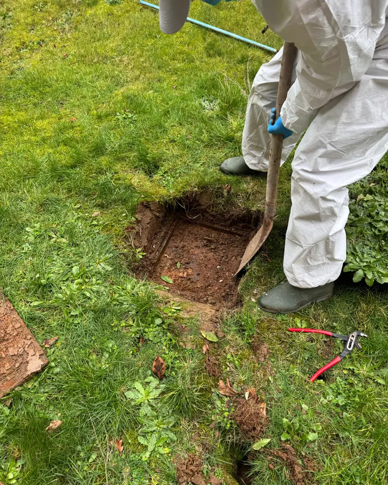
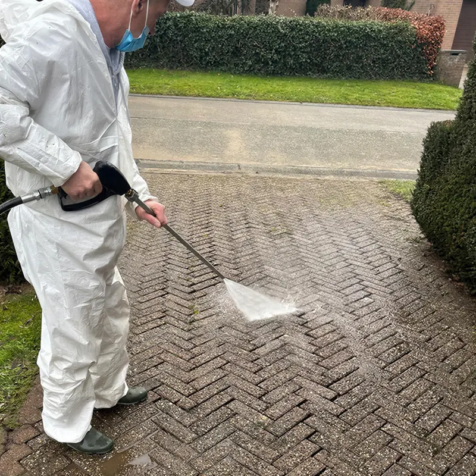

Sterput bouché, chambre de visite ouverte. Intervention réelle, 2026.
 WC bouché, furet et caméra. Intervention réelle, 2026.
WC bouché, furet et caméra. Intervention réelle, 2026.
 Inspection caméra, écran avec le compteur de distance. Intervention réelle, 2026.
Inspection caméra, écran avec le compteur de distance. Intervention réelle, 2026.

Allée pavée, nettoyage haute pression en cours. La bande claire est la partie déjà nettoyée.